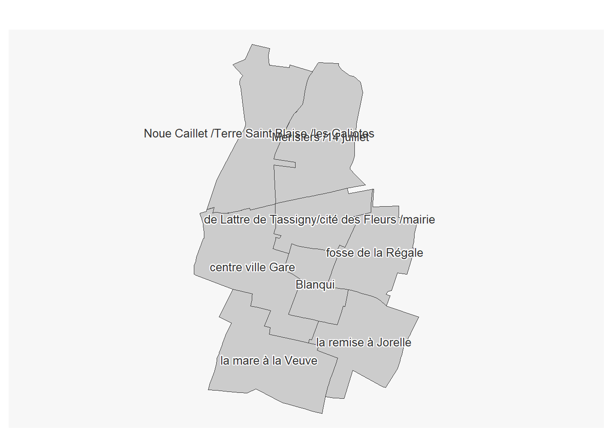

2e saisie OSM : tester
BMaranget
16/08/2021
1 Objectif
Saisir plus d’une résidence avec plusieurs attributs, faire évoluer la méthode de saisie.
On utilise désormais l’éditeur JOSM
2 Utiliser JOSM
2.1 Paramétrage F12 pour lien remote
- serveur OSM
Utiliser l’identification simple
- contrôle à distance
2.2 Basiques
{kind=link}
2.3 2 petits exercices JOSM
exercice 1 : sur un calque vierge, utiliser mode s (sélectionner), a (ajouter), et w (modifier)
exercice 2 : osmecum intégrer le bati
Essayer par exemple de fusionner deux points, un point et une ligne… en suivant les indications de la fiche
2.4 Contrôle de la saisie
Le validateur permet de repérer les erreurs possibles
exercice : sans avoir fait de changement sur une zone, activer le validateur et zoomer sur un objet posant problème.
On s’aperçoit que souvent le validateur est trop rigoureux.
3 Préparation
3.2 Se partager les zones
2 type de sources : internes et opendata
La première va permettre de définir le zonage et de servir de base de saisie
La deuxième va amener la définition des tags à utiliser
3.2.0.1 Données internes : l’inventaire de 2013
3.2.0.1.1 Les zones
La problématique : que cartographier ?
Rappel : la carte voulue est une carte des résidences, donc on va essayer de cerner ces résidences.
Pour celà nous avons un outil interne à la commune : le répertoire du patrimoine HLM dont on va pouvoir reprendre la sectorisation.
library(sf)## Linking to GEOS 3.9.1, GDAL 3.3.2, PROJ 7.2.1; sf_use_s2() is TRUEzone <- st_read("data/logement.gpkg", "quartiersBailleurs")## Reading layer `quartiersBailleurs' from data source
## `C:\Users\tachasa\coursP8\data\logement.gpkg' using driver `GPKG'
## Simple feature collection with 8 features and 1 field
## Geometry type: MULTIPOLYGON
## Dimension: XY
## Bounding box: xmin: 661091 ymin: 6865344 xmax: 663345.5 ymax: 6869044
## Projected CRS: RGF93 / Lambert-93library(mapsf)
mf_map(zone)
mf_label(zone, "NOM_IRIS", halo = T, cex = 0.8, lines = T)
3.2.0.1.2 Le nom des résidences
resid <- read.csv("data/bailleurInventaireCorrigeUTF8.csv", fileEncoding = "UTF-8")
head(resid [resid$rue.si.différente.de.nom.résidence != "",])## bailleurs secteurs numSecteur
## 14 BONDY HABITAT Secteur Centre Ville/Gare 2
## 27 BONDY HABITAT Secteur de Lattre de Tassigny 3
## 32 EFIDIS Secteur De Lattre de Tassigny 3
## 34 BONDY HABITAT Secteur La Mare a la Veuve 5
## 36 3F IMMOBILIER Secteur Fosse de la Régale 4
## 40 ESPACE HABITAT Secteur La Mare a la Veuve 5
## residence rue.si.différente.de.nom.résidence numeros
## 14 Lamartine Polissard et Galliéni 2 et 80
## 27 Résidence de ’Ourcq De Lattre de Tassigny 2bis – 4 bis
## 32 Résidence des Cerises Robert Douvillez 2
## 34 Résidence du Levant la Paix 27 – 31
## 36 Cos Résiduel Barbusse 121
## 40 Résidence l’Europe Salengro 107-117Il s’agit du début de fichier. La colonne “rue.si…” indique la rue concernée si elle est différente du nom de la cité. Généralement, les résidences portent le nom de la rue qui passe devant l’immeuble. Ce fichier va saisir de base de saisie. Il s’agit de chercher les résidences concernées sur la carte.
3.2.0.2 RPLS données opendata
3.2.0.2.1 Découverte du RPLS
CARTE 2 : zonage inventaire et RPLS
3.2.0.2.2 Traitements appliqués au RPLS
pour le RPLS au département
Quels traitements faut-il appliquer au RPLS téléchargé ?
library(sf)
library(mapsf)
data <- read.csv2( "data/RPLS2019_detail_IDF_DEP_93.csv", encoding = "UTF-8")
# 1er traitement
data <- data [data$CODEPOSTAL == '93140',]
# 2e traitement
str(data [, c("longitude", "latitude")])
data <- st_as_sf(data, coords =c("longitude", "latitude"), crs = 4326)
# 3e traitement
st_write(data,"data/logement.gpkg","RPLS4326", delete_layer = T)3.2.0.2.3 Savoir faire QGIS
charger 2 couches (RPLS et quartiersBailleurs dans le gpkg logement)
symbologie groupe de points pour le RPLS

- symbologie pour catégorisé pour le quartier en bordure ligne simple
 - tuile osm ou rues de la
première carte
- tuile osm ou rues de la
première carte
- mise en page qgis
3.2.0.2.4 Résultat

4 Saisissons !
Nous avons 2 sources :
La liste des résidences en .csv qui nous sert de base de saisie
le contenu du RPLS qui nous permet de remplir les tags
Au bout de quelques saisies, la méthode suivante peut-être envisagée.
4.1 Méthode de saisie
Choisir une résidence dans le .csv
Chercher sur la carte Qgis s’il y a des logements correspondant
si oui, avec l’outil d’identification, chercher l’année de construction et le nombre d’étages (l’étage maximum)
dans JOSM, repérer l’immeuble ou la résidence concernée et mettre les tags.
Attention, il peut être nécessaire si plusieurs immeubles sont concernés de tracer un polygone et de lui attribuer les tags sauf building:levels qui est propre à chaque immeuble.
- dans le framapad, mettre son prénom au niveau de la résidence pour signaler que la saisie a été faite
4.2 Bilan de l’heure de saisie
Il est difficile de se repérer géographiquement.
Les sources RPLS et inventaire pourtant censée être solides ne coincident pas entre elles.
tagger building:owner sur un polygone qui n’est pas un polygone n’est pas très malin…
Cours P8 G2M 2022 QGIS OSM - Bailleurs sociaux Bondy